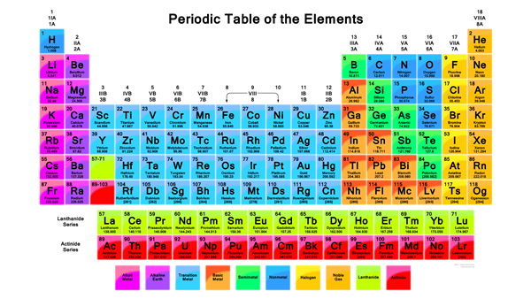

Specific Uses of Tabular Data
- Publishing (Cross-reference)
- Mathematics
- Databases
- Natural Sciences
Publishing (Cross-reference)
A table of contents, usually headed simply Contents and abbreviated informally as TOC, is a list, usually found on a page before the start of a written work, of its chapter or section titles or brief descriptions with their commencing page numbers.
Mathematics
A truth table is a mathematical table used in logic—specifically in connection with Boolean algebra, boolean functions, and propositional calculus—which sets out the functional values of logical expressions on each of their functional arguments, that is, for each combination of values taken by their logical variables (Enderton, 2001). In particular, truth tables can be used to show whether a propositional expression is true for all legitimate input values, that is, logically valid.
Databases
A spreadsheet is an interactive computer application for organization, analysis and storage of data in tabular form.[1][2][3] Spreadsheets developed as computerized analogs of paper accounting worksheets.[4] The program operates on data entered in cells of a table. Each cell may contain either numeric or text data, or the results of formulas that automatically calculate and display a value based on the contents of other cells. A spreadsheet may also refer to one such electronic document.[5][6][7]
Natural Sciences
The periodic table, also known as the periodic table of elements, is a tabular display of the chemical elements, which are arranged by atomic number, electron configuration, and recurring chemical properties. The structure of the table shows periodic trends. The seven rows of the table, called periods, generally have metals on the left and non-metals on the right. The columns, called groups, contain elements with similar chemical behaviours. Six groups have accepted names as well as assigned numbers: for example, group 17 elements are the halogens; and group 18 are the noble gases. Also displayed are four simple rectangular areas or blocks associated with the filling of different atomic orbitals.
The organization of the periodic table can be used to derive relationships between the various element properties, and also to predict chemical properties and behaviours of undiscovered or newly synthesized elements.

Constance Billard and St. Judes Senior Class Survey
| Name |
Surname |
Home Town |
Favourite Sauce |
| Blair |
Waldorf |
Upper East Side, Manhattan |
None |
| Serena |
Van Der Woodsen |
Upper East Side, Manhattan |
Sriracha |
| Charles |
Bass |
Upper East Side, Manhattan |
Dijon mustard |
| Nathanial |
Archibald |
Upper East Side, Manhattan |
Ketchup |